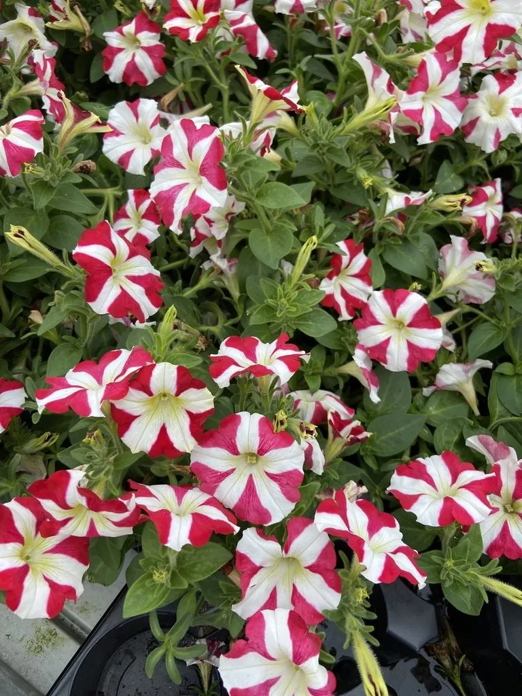

花卉与草本 · 植物界
矮牵牛 Petunia × atkinsiana

茄科一年生草本，花冠喇叭形、色彩繁多，是花坛与吊篮最常用的草花之一，由两种南美矮牵牛杂交而来。
- 分类
- 门被子植物门纲木兰纲目茄目科茄科属矮牵牛属
- 栖息环境
- 南美草原起源的园艺杂交种，喜温暖、阳光充足、通风良好
- 地理分布
- 原产南美洲，现世界各地广泛栽培，中国各地花坛与阳台常见
- 保护级别
- 暂无评估
物种志
矮牵牛为茄科矮牵牛属一年生草本，园艺品种多为杂交种，株高 15–60 厘米，茎直立或匍匐，全株被细柔毛。叶片卵形，对生，表面有黏性腺毛。花单生叶腋，花冠漏斗形，直径 5–10 厘米，边缘有皱褶，有红、粉、紫、白、黄及条纹、复色，花期 4–10 月；果实为蒴果。
矮牵牛由南美洲的腋花矮牵牛和整合矮牵牛杂交育成，19 世纪起在欧洲广泛栽培，如今品种数以千计，有直立型和垂吊型之分。它喜阳光充足、温暖湿润和通风良好的环境，不耐寒也不耐酷热，盛夏高温时需适当遮阴；播种以春播为主，垂吊品种适合吊篮和窗台。它与旋花科的牵牛花并非近亲，只是花形相似，容易混淆。
形态与习性
- 株高15–60 厘米，垂吊型枝条可达 1 米
- 花期4–10 月，单株花期长
- 果期花后结蒴果
- 光照喜充足阳光，夏季高温需遮阴
- 水分喜湿润，忌积水
- 土壤疏松肥沃、排水良好的壤土
- 繁殖以播种为主，也可扦插
- 主要用途花坛、花境、吊篮与窗台盆栽
趣味知识
- 矮牵牛的学名中“×”表示它是杂交种，由两种南美矮牵牛杂交育成。
- 它与旋花科的牵牛花并非近亲，只是花形相似，常被误认。
- 叶片和茎上的腺毛会分泌黏液，触摸后有黏手的感觉。
- 垂吊型品种枝条可垂到 1 米长，是吊篮和窗台绿化的热门材料。